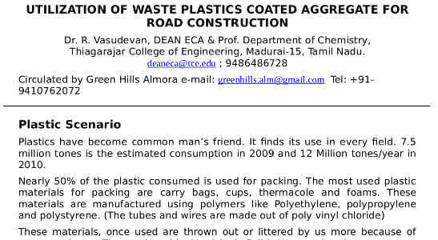
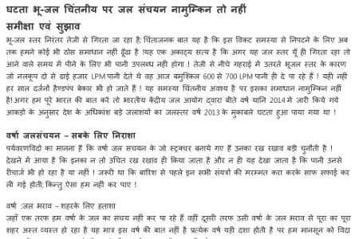

Composting and Recycling
Aerobic or anaerobic composting
Click here to read about Bokashi Bucket in more detail
- Kitchen and garden waste can be composted using earthworms like Eisenia foetida or Eudrilus Eugeniae or Perionyx excavates to produce rich vermi-compost. If you have garden space, dig a pit about 3 feet deep in a shady spot, put some cowdung at the bottom in one half of it and keep adding your kitchen and garden waste, covering each layer with some of the soil that was dug up to make the pit. Remember to remove the stones from it. Keep it damp and shady by covering it with some old sacks or cloth. When one half is full, start filling the second half in the same way. After about six weeks, the worms will have converted the waste in the first half into manure which you can use for your plants.
- If you do not have garden space, you can use the bokashi method to start the composting process in a bucket in your kitchen. This Japanese method of inoculating waste with effective microorganisms that pickle it prevents waste from rotting and producing foul odours. The important thing is to keep both the inoculant and your bokashi buckets airtight (Yes, you need two buckets). Here’s how to go about it.
Click here to read about Bokashi Bucket in more detail
- Keep all your kitchen waste separately. Once a day put it in your bokashi bucket putting two handfuls of the inoculant over each two to three inch thick layer of waste. Press down firmly with the cardboard in the plastic bag and cover the bucket tightly. The cardboard cutout will prevent the air in the top of the bucket from entering the waste. Open the tap each day to drain out the liquid called Bokashi tea. This is very good fertiliser and should be diluted with 10 parts water to one part Bokashi tea and immediately used on indoor or outdoor plants. When the bucket is full, keep it aside and start on the next. Continue to drain the liquid daily.
- After two weeks, the waste in the first bucket will have fermented but it will not have disintegrated. You will need to take it to the composting site in your neighbourhood or to a friend who has a compost pit. Earthworms love the fermented waste and will break it down in a week’s time yielding excellent compost.
- India generates more than 65 million tonnes of solid waste each year but imports about 4 million tonnes of waste paper annually, equivalent to almost 50% of its recycling capacity! We recycle only 20% of our waste paper while countries like Germany and USA recycle 70% and more. The shortfall in supply of waste paper obliges paper factories to import it. Mr. Paresh Parikh decided to respond to the high demand for waste paper in a unique way. In 2010, he launched Pastiwala.com in Gujarat. He now covers 500,000 households, provides fair wages and social security to 500 waste pickers and collects 142 tonnes of waste paper per day. This is futuristic waste collection.
Read more: Pastiwala,the innovative business of waste
- All types of plastic waste can be shredded and melted in an extruder to produce pellets that can then be moulded into useful goods like buckets, basins and pipes, as at this factory in Kathgodam.


- Using waste plastic in road construction solves two problems simultaneously – it reduces pollution and increases the durability and load-bearing capacity of roads. This simple process has been applied with success in several States in the South.

Dr. Vasudevan’s paper
- A simple but much neglected solution to the problem of water scarcity that looms large in the not so distant future. This article in Hindi posted on the Swach Bharat Local Circle suggests ways in which the government and citizens can work together to make the best use of rainwater and recharge diminishing ground water.

Article on Rain water harvesting (in Hindi)